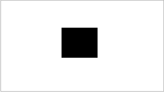

AE bias metering sets the spot weighted (small area) and center weighted (wider area) fields of detection for AE. AE detection can also be an average of the entire field. Adjust spot weighted fields with the mtrTables.spotWeighted parameter. Adjust center weighted fields with the mtrTables.centerWeighted parameter.
- In the Parameter Editor, navigate to .
-
Click
 and adjust the values as needed. The range of
acceptable values is from 0.0 to 1.0.
and adjust the values as needed. The range of
acceptable values is from 0.0 to 1.0.
- Navigate to .
-
Click and adjust the weight value of each grid row to the
appropriate spot weighted bias, as needed. For frame average, a bias table is not
required as all regions are equally weighted.
-
Verify AE bias tuning by pointing the camera to a test chart,
similar to the following image. Observe the effect in AE between frame average, spot
metering, and center metering.
